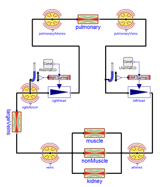
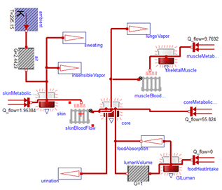
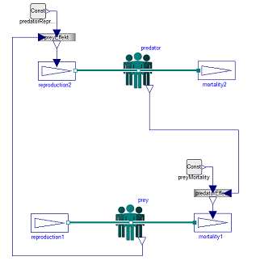

Package Physiolibrary is a modelica package for Human Physiology that is developed from HumMod modelica implementation, see http://hummod.org. It provides constants, types, connectors, partial models and model components fitted for physiological models of human body.
This is a short User's Guide for the overall library. Some of the main sublibraries have their own User's Guides that can be accessed by the following links:
Fluid |
Library of hydraulic domain. For modeling of cardiovascular system. |
Thermal |
Library of termoregulation support. As extension of Modelica.Thermal.HeatTransfer. |
Population |
Library for population models such as predator-prey or cells population. |
Icons |
Icons |
Types |
Physiological types. Physiological unit vs. SI units, nominals, inputs/outputs, typed constants. |
Blocks |
Useful blocks, that are missing in package Modelica.Blocks (MSL 3.2), cubic interpolation curves, multiplication factors. |
Extends from Modelica.Icons.Information (Icon for general information packages).
Package Content
| Name |
Description |
| Overview
|
Overview of Physiolibrary |
| Connectors
|
Connectors |
| ReleaseNotes
|
Release notes |
| Contact
|
Contact |
| License
|
BSD 3-Clause License |
| NewRelease
|
Publishing new release |
ThePhysiolibrary consists of the following main sub-libraries:
Library Components |
Description |
 |
Fluid The main usage of the hydraulic domain in human physiology is modeling of the cardio-vascular system. And because there are no extreme thermodynamic conditions, the system can be really simple —it is only necessary to model conditions for incompressible water, at normal liquid-water temperatures and with relative pressure 5-20kPa. This boring thermodynamic state leads to the very simple blocks of hydraulic resistance, hydrostatic pressure, volumetric flow, inertia and finally the block of blood accumulation in elastic vessels. |
 |
Thermal For the human body to function optimally, it is critical to hold the core temperature at 35–39°C. A fever of 41°C for more than a short period of time causes brain damage. If the core temperature falls below 10°C, the heart stops. As in the hydraulic domain, the thermal domain is simplified to these conditions. In the Thermal package extends the package Modelica.Thermal.HeatTransfer from Modelica Standard Library 3.2 (MSL), where the connector is composed of temperature and heat flow. The main blocks in Thermal are: Conductor, IdealRadiator and HeatAccumulation. The heat conductor conducts the heat from the source, such us muscles or metabolically active tissue, to its surrounding. IdealRadiator delivers heat to tissues by blood circulation. HeatAccumulation plays a role in accumulating thermal energy in each tissue mass driven by its heat capacity. We recommend to use this block instead of Modelica.Thermal.HeatTransfer.HeatCapacitor to have possibility of variable mass amount or to have a support for calculation of steady state. |
 |
Population Population models are based on increasing and decreasing of average number of population members. The number of population member is a nonflow variable in connectors and flow variable is the change of population members. The growth or differentiation of cells can be modeled as stream from one population component to another, where each population component could be defined by selected age, type, function or wathever.. Even the domain is integer, all is modeled by real numbers. |
Extends from Modelica.Icons.Information (Icon for general information packages).
The Physiolibrary defines the most important elementary connectors in various domains. If any possible, a user should utilize these connectors in order that components from the Physiolibrary and from other libraries can be combined without problems. The following elementary connectors are defined (the meaning of potential, flow, and stream variables is explained in section "Connector Equations" below):
domain |
potential variables |
flow variables |
stream variables |
connector definition |
icons |
hydraulic (fluid) |
absolute pressure |
mass flow |
enthalpy, substances concentrations |
Modelica.Fluid.Interfaces
FluidPort, FluidPort_a, FluidPort_b
Fluid.Interfaces FluidPort, FluidPort_a, FluidPort_b |

|
thermal |
temperature |
heat flow rate |
|
Modelica.Thermal.HeatTransfer.Interfaces
HeatPort, HeatPort_a, HeatPort_b Thermal.Interfaces HeatPort, HeatPort_a, HeatPort_b |
|
population |
the number of population members |
change of the number of population members |
|
Population.Interfaces
PopulationPort, PopulationPort_a, PopulationPort_b |
|
block diagram |
Real unit-typed variables |
|
|
Types.RealIO
EnergyInput, EnergyOutput, TimeInput, TimeOutput, MassInput, MassOutput, MassFlowRateInput, MassFlowRateOutput, HeightInput, HeightOutput, AccelerationInput, AccelerationOutput, PressureInput, PressureOutput, VolumeInput, VolumeOutput, VolumeFlowRateInput, VolumeFlowRateOutput, ConcentrationInput, ConcentrationOutput, OsmolarityInput, OsmolarityOutput, AmountOfSubstanceInput, AmountOfSubstanceOutput, MolarFlowRateInput, MolarFlowRateOutput, DiffusionPermeabilityInput, DiffusionPermeabilityOutput, HeatInput, HeatOutput, TemperatureInput, TemperatureOutput, HeatFlowRateInput, HeatFlowRateOutput, ThermalConductanceInput, ThermalConductanceOutput, ElectricCurrentInput, ElectricCurrentOutput, ElectricChargeInput, ElectricChargeOutput, ElectricPotentialInput, ElectricPotentialOutput, FractionInput, FractionOutput, FrequencyInput, FrequencyOutput, OsmoticPermeabilityInput, OsmoticPermeabilityOutput, HydraulicConductanceInput, HydraulicConductanceOutput, HydraulicComplianceInput, HydraulicComplianceOutput, HydraulicInertanceInput, HydraulicInertanceOutput, GasSolubilityInput, GasSolubilityOutput, DensityInput, SpecificEnergyInput, SpecificEnergyOutput, SpecificHeatCapacityInput, SpecificHeatCapacityOutput |
|
In all domains, usually 2 connectors are defined. The variable declarations are identical, only the icons are different in order that it is easy to distinguish connectors of the same domain that are attached at the same component.
Extends from Modelica.Icons.Information (Icon for general information packages).
Marek Mateják
email: marek@matfy.cz
skype: marek.matejak
tel: +420 776 301 395
Extends from Modelica.Icons.Contact (Icon for contact information).
All files in this directory (Physiolibrary) and in all subdirectories, especially all files that build package "Physiolibrary" are licensed by Marek Matejak under the BSD 3-Clause License (with exception of files "Resources/*").
Licensor:
Marek Mateják,
Hviezdoslavova 632/41,
916 01 Stará Turá,
Slovak Republic,
email: marek@matfyz.cz
Organization:
General University Hospital in Prague, U Nemocnice 499/2, 128 08 Prague 2, Czech Republic
Institute of Pathological Physiology, First Faculty of Medicine, Charles University in Prague,U Nemocnice 5, 128 53 Prague 2, Czech Republic
Copyright notices of the files:
Copyright (c) 2008-2022, Marek Mateják, Charles University in Prague, General University Hospital in Prague
All rights reserved.
Redistribution and use in source and binary forms, with or without modification, are permitted provided that the following conditions are met:
1. Redistributions of source code must retain the above copyright notice, this list of conditions and the following disclaimer.
2. Redistributions in binary form must reproduce the above copyright notice, this list of conditions and the following disclaimer in the documentation and/or other materials provided with the distribution.
3. Neither the name of the copyright holder nor the names of its contributors may be used to endorse or promote products derived from this software without specific prior written permission.
THIS SOFTWARE IS PROVIDED BY THE COPYRIGHT HOLDERS AND CONTRIBUTORS "AS IS" AND ANY EXPRESS OR IMPLIED WARRANTIES, INCLUDING, BUT NOT LIMITED TO, THE IMPLIED WARRANTIES OF MERCHANTABILITY AND FITNESS FOR A PARTICULAR PURPOSE ARE DISCLAIMED. IN NO EVENT SHALL THE COPYRIGHT HOLDER OR CONTRIBUTORS BE LIABLE FOR ANY DIRECT, INDIRECT, INCIDENTAL, SPECIAL, EXEMPLARY, OR CONSEQUENTIAL DAMAGES (INCLUDING, BUT NOT LIMITED TO, PROCUREMENT OF SUBSTITUTE GOODS OR SERVICES; LOSS OF USE, DATA, OR PROFITS; OR BUSINESS INTERRUPTION) HOWEVER CAUSED AND ON ANY THEORY OF LIABILITY, WHETHER IN CONTRACT, STRICT LIABILITY, OR TORT (INCLUDING NEGLIGENCE OR OTHERWISE) ARISING IN ANY WAY OUT OF THE USE OF THIS SOFTWARE, EVEN IF ADVISED OF THE POSSIBILITY OF SUCH DAMAGE.
Extends from Modelica.Icons.Information (Icon for general information packages).
New release must be numbered by Semantic Versioning 2.0.0, see semver.org.
If minor version, then the conversion script must be written and connected with package Physiolibrary using "annotation(conversion(from(version=..)))"!
To clean the code from dummy annotations try to use script ttws.
To check english spelling try to use missspell_fixer.
Update version number to "X.Y.Z":
- At package Physiolibrary annotation: (version="X.Y.Z") together with "versionBuild", "versionDate" and "dateModified" attribute
- At file "./Physiolibrary/libraryinfo.mos"
Update release notes:
- At UsersGuide.ReleaseNotes
- At file "./README.md", together with update of "Current release" section.
Publish release in GitHub:
- Prepare release in "master" branch
- Install, Check, Test, Test, Test..
- Draft a new release from "master" branch with number "vX.Y.Z" and with release notes.
Extends from Modelica.Icons.Information (Icon for general information packages).
Automatically generated Wed Oct 11 14:54:17 2023.